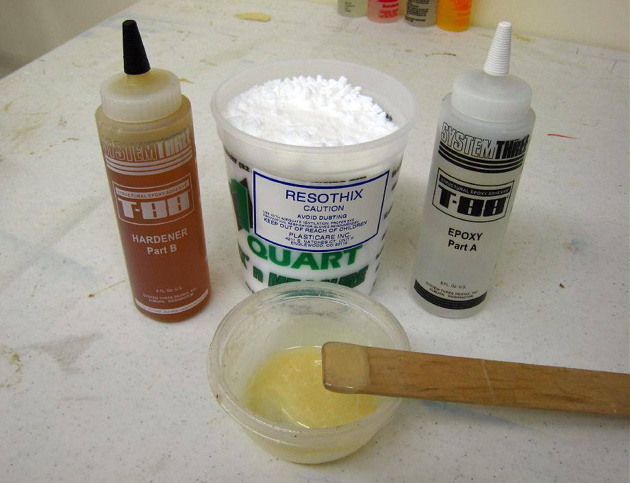

| Gluing Stringers | Menu Previous Page Next Page |
|

System 3 / T-88 epoxy glue with filler is used to glue the frame. This is an extremely strong epoxy with a 30 minute pot life. The additional filler will thicken the glue and fill any gaps between connections while preventing the glue from running. Very little filler is required as T-88 epoxy is thick to begin with. Another option is to use Epoxy resin with filler. West Systems Epoxy was used to construct the wood frame Sea Rider and Nukumi kayaks earlier.
|
|